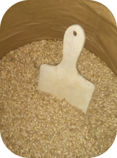

Anwendung
Die Dinkelmaus kann auf vielerlei Arten verwendet werden:
|
In der Mikrowelle erwärmen...
Im Backofen erwärmen...
Auf Heizkörpern oder dem Ofen erwärmen...
Die Dinkelmaus als Kühlkissen...
|
Pflegehinweise
Die Dinkelmaus ist vergleichsweise pflegeleicht. Sollte die Dauer der Wärmespeicherung abnehmen, so liegt dies meist daran, dass die Dinkelkörner in der Maus etwas Feuchtigkeit benötigen, um Temperatur richtig speichern zu können. Eine simple Lösung ist, das Kissen einmal in einer feuchten Nacht an der frischen Luft liegen zu lassen. Natürlich sollte das Kissen dabei nur die Luftfeuchtigkeit aufnehmen und nicht nass werden, da ansonsten die Getreidekörner beschädigt werden könnten. Alternativ kann das Kissen einige Zeit in die Gefriertruhe gelegt werden, um wieder Feuchtigkeit aufzunehmen. Die feuchte Wärme zieht tief in den Körper ein und wird als angenehm empfunden, da sie zur Entspannung beiträgt.
Die Feuchtigkeit im Korn verhindert des Weiteren, dass trockene Körner bei übermäßiger Hitze verbrennen. Bei richtiger Pflege hält ein Dinkelkissen problemlos über zwei Jahre.
Sollte die Maus einmal (durch Cremes oder sonstige Flecken) verschmutzt werden, so kann der Stoff jederzeit bei 30°C gewaschen werden. Trennen Sie dazu einfach die Maus an der Naht auf und entfernen die Körner vor der Wäsche. Nachdem der Stoff getrocknet ist, können Sie die Maus wieder befüllen und an der Naht erneut zunähen.